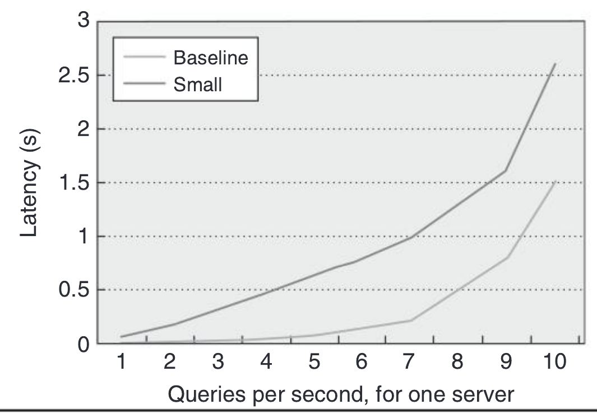
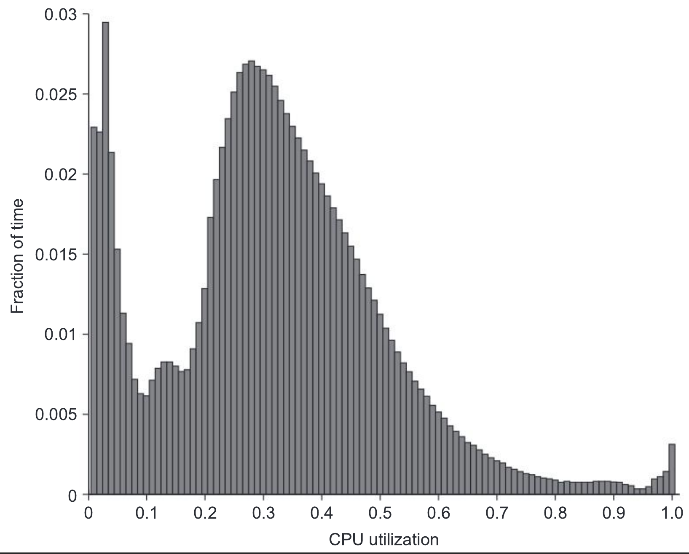
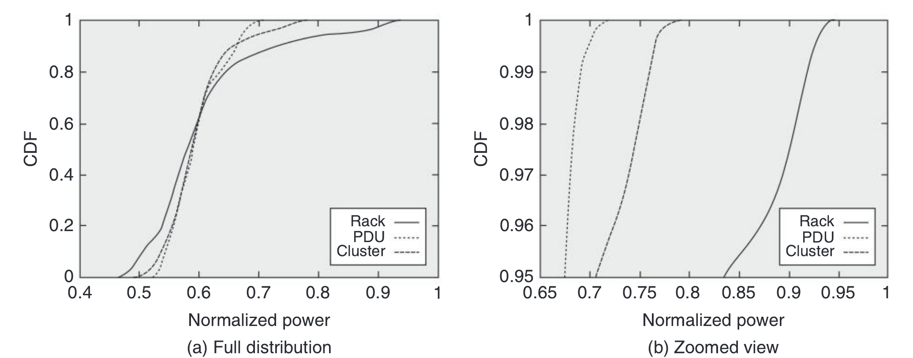

案例研究与习题（Parthasarathy Ranganathan）
案例研究 1：总拥有成本对仓库级计算机设计决策的影响
本案例研究涉及的概念
- 总拥有成本（TCO）
- 服务器成本和功耗对整个 WSC 的影响
- 低功耗服务器的利与弊
6.1 衡量一台仓库级计算机（WSC）的效益，总拥有成本（TCO）是一个重要指标。TCO 既包括 6.7 节介绍的 CAPEX，也包括 OPEX，反映的是整个数据中心达到一定性能水平所需的拥有成本。数据中心的所有者比较不同的服务器、网络和存储体系结构时，TCO 往往是决定取舍最重要的指标。不过，TCO 的计算是多维的，要考虑许多不同的因素。本案例研究的目的是细致地考察 WSC，看不同的体系结构怎样影响 TCO，并理解 TCO 怎样左右运营者的决策。本案例研究使用图 6.32、图 6.33 和 6.7 节中的数据，并假定所描述的 WSC 达到了运营者的目标性能。TCO 常用来比较在多个维度上各不相同的服务器方案。本案例研究的习题考察在 WSC 中怎样作这类比较，以及作出决策有多复杂。
[5/5/10] <6.7> 本章讨论过，WSC 可以利用数据级并行在大规模问题上获得高性能。可以设想，换用高端服务器还能得到更高的性能。但是，性能更高的服务器，价格往往不是按比例增加，而是增加得更多。
a. [5] <6.7> 假设服务器在利用率相同的情况下快 10%，价格贵 20%，WSC 的 CAPEX 是多少？
b. [5] <6.7> 如果这些服务器的功耗还高出 15%，WSC 的 OPEX 是多少？
c. [10] <6.7> 在上述速度提高和功耗增加的条件下，新服务器的价格应为多少，才能与原来的集群相当？（提示：按这个 TCO 模型，可能需要改变设施的关键负载。）
6.2 [5/10] <6.7, 6.9> 要降低 OPEX，一个有吸引力的办法是采用低功耗版本的服务器，减少运行服务器所需的总电量。但是，与高端服务器类似，高端部件的低功耗版本在得失上也不是线性关系。
a. [5] <6.7, 6.9> 如果低功耗服务器在性能相同的情况下功耗低 15%，价格贵 20%，这是一个好的折中吗？
b. [10] <6.7, 6.9> 这种服务器的价格为多少时，才能与原来的集群相当？如果电价翻一番，结果又如何？
6.3 [5/10/15] <6.7> 服务器如果有多种工作模式，集群就可以根据工作负载的使用情况，动态地以不同配置运行。某种低功耗服务器的功耗—性能模式见图 6.45。
a. [5] <6.7> 如果服务器运营者为了节省电费，决定让所有服务器都以中等性能运行，要达到同样的性能水平需要多少台服务器？
b. [10] <6.7> 这种配置的 CAPEX 和 OPEX 各是多少？
c. [15] <6.7> 如果还有一种方案可以选择：购买一种便宜 20% 的服务器，它慢 x%，功耗低 y%。求出使 TCO 与基准服务器相当的性能—功耗曲线。
图 6.45 低功耗服务器的功耗—性能模式
| 模式 | 性能 | 功耗 |
|---|---|---|
| 高 | 100% | 100% |
| 中 | 75% | 60% |
| 低 | 59% | 38% |
6.4 [讨论] <6.7> 假设服务器上运行的工作负载保持不变，讨论习题 6.3 中两种方案各自的得失和好处。
6.5 [讨论] <6.1, 6.7> 与高性能计算（HPC）集群不同，WSC 的工作负载在一天之内往往有很大的波动。这次假设工作负载是变化的，再讨论习题 6.3 中两种方案各自的得失和好处。
6.6 [讨论] <6.7> 前面给出的 TCO 模型把大量较低层次的细节抽象掉了。讨论这些抽象对 TCO 模型整体准确性的影响。在什么情况下可以放心地作这些抽象？在什么情况下，考虑更多细节会得出明显不同的答案？
案例研究 2：WSC 中的资源分配与 TCO
本案例研究涉及的概念
- WSC 内部服务器和电力的配置
- 工作负载随时间的变化
- 这种变化对 TCO 的影响
6.7 部署高效的 WSC，主要的难题之一是恰当地配置资源，并把资源充分利用起来。WSC 规模很大，所运行的工作负载又可能有很大变化，所以这个问题很复杂。本案例研究的习题说明，资源的使用方式不同，对 TCO 的影响也不同。需要时采用图 6.32 和图 6.33 中的数据。
[5/5/10] <6.7> 配置 WSC 的难题之一，是在设施规模给定的情况下确定合适的电力负载。本章讲过，铭牌功率往往是一个很少达到的峰值。
a. [5] <6.7> 如果服务器的铭牌功率为 200 W，价格为 3000 美元，估计每台服务器的 TCO 怎样变化。
b. [5] <6.7> 再考虑一种功率更高、价格更低的服务器：功率 300 W，价格 2000 美元。
c. [10] <6.7> 如果服务器的实际平均功耗只有铭牌功率的 70%，每台服务器的 TCO 怎样变化？
6.8 [15/10] <6.7> TCO 模型的一个假设是：设施的关键负载固定不变，服务器的数量正好与这一关键负载相配。实际上，服务器的功耗随负载变化，设施所用的关键功率在任一时刻都可能不同。运营者起初必须根据数据中心的关键电力资源，以及对数据中心各组成部分用电量的估计，来配置数据中心。
a. [15] <6.7> 扩展 TCO 模型：以铭牌功率为 300 W 的服务器为依据，对 WSC 作初始配置；再假设服务器的平均利用率为 40%，因而只消耗 225 W，计算每月实际使用的关键功率和 TCO。有多少容量没有用上？
b. [10] <6.7> 换成平均利用率为 20%、只消耗 300 W 的 500 W 服务器，重做本题。
6.9 [10] <6.2, 6.7> 6.7 节讲过，WSC 常常以与最终用户交互的方式使用。交互式使用往往造成一天之内随时段的波动，高峰出现在特定的时段。例如，Netflix 的租看在晚上 8 点到 10 点出现高峰。这些随时段变化的效应合起来相当可观。比较两种数据中心的单台服务器 TCO：一种的容量按凌晨 4 点的利用率配置，另一种按晚上 9 点的利用率配置。
6.10 [讨论/15] <6.2, 6.7> 讨论在非高峰时段更好地利用多余服务器、或者节省成本的一些办法。WSC 具有交互的性质，要激进地降低功耗会遇到哪些困难？
6.11 [讨论/25] <6.7, 6.9> 提出一种着眼于降低服务器功耗来改善 TCO 的办法。评估你的方案会遇到哪些困难？根据你的方案估计 TCO 能改善多少。这一方案有哪些优点和缺点？
习题
6.12 [10/10/10] <6.1> WSC 得以实现的一个重要条件，是有充足的请求级并行性，这与指令级并行性和线程级并行性不同。本题探讨不同类型的并行性对计算机体系结构和系统设计的影响。
a. [10] <6.1> 讨论在哪些场景下，提高指令级或线程级并行性带来的好处，比利用请求级并行性所能得到的更大。
b. [10] <6.1> 增加请求级并行性对软件设计有什么影响？
c. [10] <6.1> 增加请求级并行性可能有哪些缺点？
6.13 [讨论/15/15] <6.3, 6.4> 云计算服务提供商收到由多个虚拟机（VM）组成的作业（如 MapReduce 作业）时，有多种调度方式可选：一种是轮转调度，把这些 VM 分散到所有可用的处理器和服务器上；另一种是合并调度，让它们使用尽可能少的处理器。例如，提交了一个有 24 个 VM 的作业，云中有 30 个处理器可用（每个处理器最多可运行 3 个 VM），轮转调度会用到 24 个处理器，而合并调度只用 8 个处理器。调度器还可以在不同的范围内寻找可用的处理器核：插座、服务器、机架和机架阵列。
a. [讨论] <6.4> 假设提交的作业都是计算密集型工作负载，对存储带宽的要求可能各不相同。从功耗和冷却成本、性能、可靠性几方面看，轮转调度与合并调度各有什么优缺点？
b. [15] <6.4> 假设提交的作业都是 I/O 密集型工作负载，在不同的范围内，轮转调度与合并调度各有什么优缺点？
c. [15] <6.4> 假设提交的作业都是网络密集型工作负载，在不同的范围内，轮转调度与合并调度各有什么优缺点？
6.14 [15/15/10/10] <6.4> MapReduce 之类的分布式计算框架让数据上彼此独立的任务在多个节点上运行，这些节点通常采用商用硬件，从而获得大量的并行性。不过，并行的程度是有限的。例如，MapReduce 为了冗余，会把数据块写到多个节点上，这要消耗磁盘带宽，可能还要消耗网络带宽。假设：
- 数据集总大小为 300 GB；
- 网络带宽为 1 Gb/s；
- map 速率为 10 s/GB，reduce 速率为 20 s/GB；
- 30% 的数据必须从远程节点读取；
- 为了冗余，每个输出文件都要写到另外两个节点上。
其余参数都采用图 6.21 中的数据。
a. [15] <6.4> 假设所有节点都在同一个机架中。用 5 个节点时，预计运行时间是多少？10 个节点、100 个节点、1000 个节点呢？讨论每种节点规模下的瓶颈。
b. [15] <6.4> 假设每个机架有 40 个节点，任何一次远程读写落到任一节点上的机会均等。100 个节点时预计运行时间是多少？1000 个节点呢？
c. [10] <6.4> 一个重要的考虑是尽量减少数据移动。从本地访问到机架内访问、再到阵列内访问，速度下降得很厉害，所以软件必须大力优化，尽量提高局部性。假设每个机架有 40 个节点，MapReduce 作业使用 1000 个节点。如果远程访问有 20% 落在同一机架内，运行时间是多少？50% 呢？80% 呢？
6.15 [20/20/10/20/20/20] <6.1, 6.4> WSC 程序员常用数据复制来克服软件中的故障。例如，Hadoop 分布式文件系统（HDFS）采用三路复制：一个本地副本，一个机架内的远程副本，一个另一机架中的远程副本。不过，值得考察的是，什么时候才需要这样的复制。
a. [20] <6.1> 假设 Hadoop 集群规模较小，不超过 10 个节点，数据集不超过 10 TB。用图 6.1 中的故障频率数据计算：一个 10 节点的 Hadoop 集群，在一路、两路和三路复制下各有怎样的可用性？
b. [20] <6.1> 仍用图 6.1 中的故障数据，对一个 1000 节点的 Hadoop 集群，一路、两路和三路复制下各有怎样的可用性？从中可以推断出，在大规模下复制有什么好处？
c. [10] <6.1, 6.4> 复制的相对开销随每个本地计算小时写入的数据量而变。一个 1000 节点的 Hadoop 作业对 1 PB 数据排序，数据混洗的中间结果写入 HDFS。计算额外的 I/O 流量和网络流量（机架内和跨机架）。
d. [20] <6.1, 6.4> 用图 6.21 计算两路和三路复制的时间开销。再用图 6.1 所示的故障率，比较不复制与两路、三路复制时的预期执行时间。
e. [20] <6.1, 6.4> 现在考虑一个对日志实施复制的数据库系统，假设每个事务平均访问硬盘一次，产生 1 KB 日志数据。计算两路和三路复制的时间开销。如果事务在内存中执行，耗时 10 ms，结果又如何？
f. [20] <6.1, 6.4> 再考虑另一个数据库系统，它为两阶段提交（为了满足 ACID 一致性）需要两次网络往返。维持一致性和复制的时间开销是多少？
6.16 [15/15/20/讨论] <6.1, 6.9> 利用请求级并行性，可以让许多台机器并行地处理同一个问题，从而获得更高的整体性能。困难之一在于如何避免把问题划分得过细。从服务等级协议（SLA）的角度看，划分得越细、每个子问题越小，为达到目标 SLA 所要付出的努力可能越大。假设 SLA 要求 95% 的查询在 0.5 秒以内响应，并行体系结构类似 MapReduce，可以启动多个冗余作业来得到同一个结果。以下各问都采用图 6.46 所示的查询—响应时间曲线。该曲线给出了响应延迟与每秒查询数的关系，有两条：一条对应基准服务器，一条对应采用较慢处理器型号的「小」服务器。
a. [15] <6.1, 6.9> 按图 6.46 所示的查询—响应时间曲线，WSC 每秒收到 30,000 个查询，要达到这一 SLA 需要多少台服务器？按这条响应时间概率曲线，需要多少台「小」服务器？只看服务器成本，「小」服务器要比普通服务器便宜多少，才能在目标 SLA 下具有成本优势？
b. [15] <6.1, 6.9> 「小」服务器的部件更便宜，可靠性往往也更差。采用图 6.1 中的数据，假设由不稳定的机器和坏内存引起的事件数增加 30%。现在需要多少台「小」服务器？这些服务器要比标准服务器便宜多少？
c. [20] <6.1, 6.9> 现在假设是批处理环境。「小」服务器的整体性能是普通服务器的 30%。仍采用习题 6.16 (b) 中的可靠性数据，假设性能随节点规模完全线性扩展，每个节点上任务的平均长度为 10 min，要提供与 2400 个节点的标准服务器阵列相同的预期吞吐率，需要多少个「小」节点？如果扩展效率是 85% 呢？60% 呢？
d. [讨论] <6.1, 6.9> 扩展往往不是线性函数，而是对数函数。一种自然的应对办法是改为购买更大的节点，每个节点计算能力更强，从而尽量缩小阵列规模。讨论这种体系结构的一些得失。

6.17 [10/10/15/讨论] <6.4, 6.9> 考虑把非易失的 Flash 存储器纳入存储层次，可以采用固态盘（SSD），也可以采用 PCI Express 接口的扩展卡。典型的 SSD 带宽为 250 MB/s，延迟为 75 µs；PCIe 卡的带宽为 600 MB/s，延迟为 35 µs。
a. [10] 把这两种器件加到图 6.22 的本地服务器存储层次中。假设它们在不同层次上被访问时，性能的缩放系数与 DRAM 相同，比较这两种 Flash 存储设备在跨机架访问和跨阵列访问时的性能。
b. [10] 讨论能够利用这一新的存储层次的一些软件优化。
c. [15] 「谬误与陷阱」（6.9 节）中讲过，把所有磁盘都换成 SSD，未必是一种合算的策略。考虑一个用 WSC 提供云服务的运营者，讨论在哪些场景下使用 SSD 或其他 Flash 存储器是合理的。
d. [讨论] 讨论存储层次中是否还有机会增加其他层次：更慢的内存（如分解式内存），或者更慢的 Flash（成本更优化的技术）。
6.18 [20/20/讨论] <6.4> 存储层次：有些 WSC 设计大量使用缓存来降低延迟，而且有多种缓存方案，可以适应不同的访问模式和需求。
a. [20] 考虑从 Web 上播放富媒体流（如 Netflix 或 YouTube）的设计方案。首先需要估计视频的数量、每个视频的编码格式数，以及同时观看的用户数。假设某视频流服务提供商有 12,000 部影片在线播放，每部影片至少有四种编码格式（500、1000、1600 和 2200 kbps）。再假设整个网站同时有 100,000 名观众，视频平均长 75 min（既有 30 min 的节目，也有 2 h 的影片）。估计总存储容量、I/O 带宽和网络带宽，以及视频流相关的计算需求。
b. [20] 按每个用户、每个视频以及全部视频来看，访问模式和访存局部性各有什么特点？（提示：随机还是顺序，时间局部性和空间局部性好还是差，工作集相对较小还是较大。）
c. [讨论] 利用 DRAM、SSD 和硬盘，有哪些影片存储方案？从性能和 TCO 两方面比较这些方案。习题 6.17 (d) 中那类替代存储技术会有用吗？
6.19 [20/讨论/讨论/讨论] <6.4> 考虑一个有 1 亿活跃用户的社交网站。用户发布关于自己的动态（文字和图片），也浏览社交圈中的动态并与之互动。为了降低延迟，Facebook 和许多其他网站在后端存储/数据库层之前用 memcached 作为缓存层。假设任一时刻，平均每个用户在浏览若干 MB 的内容；任一天中，平均每个用户上传若干 MB 的内容。
a. [20] 对这里讨论的社交网站，容纳其工作集需要多少 DRAM？如果每台服务器有 96 GB DRAM，估计生成一个用户的主页需要多少次本地内存访问、多少次远程内存访问。
b. [讨论] 现在考虑两种候选的 memcached 服务器设计：一种采用面向性能、能耗较高的核，另一种采用较小的高能效核（例如 Intel 和 AMD 发布的 E 核和 P 核）。memcached 需要很大的物理内存，但 CPU 利用率很低。在这一前提下，这两种设计各有什么优缺点？
c. [讨论] 目前内存模块与处理器耦合得很紧，要支持大内存，往往需要增加 CPU 插座的数量。列出其他一些能提供大物理内存、又不必按比例增加服务器插座数的设计，并从性能、功耗、成本和可靠性几方面加以比较。
d. [讨论] 同一个用户的信息可以同时存放在 memcached 服务器和存储服务器中，这些服务器在物理上可以有不同的部署方式。讨论 WSC 中以下几种服务器布局的优缺点：(1) memcached 与存储服务器放在同一台服务器上；(2) memcached 服务器和存储服务器放在同一机架的不同节点上；(3) memcached 服务器放在同一些机架上，存储服务器集中放在另外的机架上。
6.20 [5/5/10/10/讨论/讨论/讨论] <6.2, 6.4, 6.7> 数据中心网络：MapReduce 之类的分布式框架与仓库级计算机结合起来，是处理大规模数据的有力手段。本题假设用 4000 台服务器和 48,000 块硬盘，在 6 小时内对 1 PB 的记录排序。
a. [5] 根据图 6.21 及相关正文推算磁盘带宽。把数据读入主存、再把排好序的结果写回，需要多少秒？
b. [5] 假设每台服务器有两块 1 Gb/s 的以太网网络接口卡（NIC），WSC 交换基础设施的超额订阅比为 4，把整个数据集在 4000 台服务器之间混洗一遍需要多少秒？
c. [10] 假设网络传输是 PB 级排序的性能瓶颈，你能估计出谷歌数据中心的超额订阅比是多少吗？
d. [10] 现在考察采用无超额订阅的 10 Gb/s 以太网有什么好处，例如采用 48 端口的 10 Gb/s 以太网（2010 年 Indy 排序基准测试的冠军 TritonSort 就采用了这种网络）。混洗 1 PB 数据需要多长时间？
e. [讨论] 比较这里的两种做法：(1) 大规模横向扩展，网络超额订阅比高；(2) 规模相对较小的系统，网络带宽高。两者各有哪些潜在瓶颈？从可扩展性和 TCO 来看，各有哪些优缺点？
f. [讨论] 排序和许多重要的科学计算工作负载通信量很大，而其他许多工作负载并非如此。列出三个不能从高速网络中获益的工作负载实例。对这两类工作负载，你分别推荐使用哪些 EC2 实例？
g. [讨论] 查阅 www.sortbenchmark.org 上的各项基准测试以及各类别最近的冠军。这些结果与 (e) 中讨论得出的认识是否吻合？CloudSort 最近一届冠军所用的云实例，与你在 (f) 中的答案相比如何？
6.21 [10/25/讨论] <6.4, 6.7> WSC 规模巨大，根据预期要运行的工作负载恰当地分配网络资源非常重要。不同的分配方式，对性能和总拥有成本都会有很大影响。
a. [10] 用图 6.32 中详细列出的电子表格数据，求每台接入层交换机的超额订阅比。如果超额订阅比减半，对 TCO 有什么影响？如果加倍呢？
b. [25] 如果工作负载受网络限制，降低超额订阅比就可能提高性能。假设一个计算作业使用 120 台服务器，读取 5 TB 数据。读入数据、中间数据和输出数据之间的比例与图 6.47 中 Sep-09 一行相同，存储层次各级的带宽按图 6.21 确定。读数据时，假设 50% 的数据从远程磁盘读取，其中 80% 在机架内读取，20% 在阵列内读取。对中间数据和输出数据，假设 30% 的数据使用远程磁盘，其中 90% 在机架内，10% 在阵列内。超额订阅比减半时，整体性能提高多少？超额订阅比加倍时，性能如何？分别计算各种情况下的 TCO。
c. [讨论] 你认为新兴的技术趋势会怎样影响未来 WSC 的设计？例如，每个系统的核数越来越多（包括采用芯粒），光互连带来更高的带宽和更好的能效。
图 6.47 谷歌 2004 年到 2016 年每月的 MapReduce 使用情况。12 年间，MapReduce 作业数增加到原来的 3300 倍。根据 [Dean, J., 2009] 更新
| 月份 | MapReduce 作业数 | 平均完成时间（s） | 每个作业平均服务器数 | 每台服务器平均核数 | CPU 核年 | 输入数据（PB） | 中间数据（PB） | 输出数据（PB） |
|---|---|---|---|---|---|---|---|---|
| Sep-16 | 95,775,891 | 331 | 130 | 2.4 | 311,691 | 11,553 | 4095 | 6982 |
| Sep-15 | 115,375,750 | 231 | 120 | 2.7 | 272,322 | 8307 | 3980 | 5801 |
| Sep-14 | 55,913,646 | 412 | 142 | 1.9 | 200,778 | 5989 | 2530 | 3951 |
| Sep-13 | 28,328,775 | 469 | 137 | 1.4 | 81,992 | 2579 | 1193 | 1684 |
| Sep-12 | 15,662,118 | 480 | 142 | 1.8 | 60,987 | 2171 | 818 | 874 |
| Sep-11 | 7,961,481 | 499 | 147 | 2.2 | 40,993 | 1162 | 276 | 333 |
| Sep-10 | 5,207,069 | 714 | 164 | 1.6 | 30,262 | 573 | 139 | 37 |
| Sep-09 | 4,114,919 | 515 | 156 | 3.2 | 33,582 | 548 | 118 | 99 |
| Sep-07 | 2,217,000 | 395 | 394 | 1.0 | 11,081 | 394 | 34 | 14 |
| Mar-06 | 171,000 | 874 | 268 | 1.6 | 2002 | 51 | 7 | 3 |
| Aug-04 | 29,000 | 634 | 157 | 1.9 | 217 | 3.2 | 0.7 | 0.2 |
6.22 [5/15/15/20/25/讨论/讨论] <6.2> 发挥云的能力：设想你是 Alexa.com 排名靠前的某个网站的站点运营和基础设施经理，正在考虑使用亚马逊 Web 服务（AWS）。决定是否迁移到 AWS 时，需要考虑哪些因素？可以使用哪些服务和实例类型？能节省多少成本？你可以利用 Alexa 和网站流量信息（例如 Wikipedia 提供页面浏览统计）来估计一个排名靠前的网站收到的流量，也可以采用 Web 上的具体例子，如下面这个：http://2bits.com/sites/2bits.com/files/drupal-single-server-2.8-million-page-views-a-day.pdf。
这份幻灯片介绍了一个 Alexa 排名第 3400 的网站，它每天有 280 万次页面浏览，只用一台服务器。这台服务器有两个四核 2.5 GHz Xeon 处理器、8 GB DRAM，以及三块 15K RPM 的 SAS 硬盘，组成 RAID1，每月费用约 400 美元。该网站大量使用缓存，CPU 利用率在 50% 到 250% 之间（大致相当于 0.5～2.5 个核处于忙碌状态）。
a. [5] 查看现有的 EC2 实例（http://aws.amazon.com/ec2/instance-types/），哪些实例类型达到或超过这台服务器目前的配置？
b. [15] 查看 EC2 的价格信息（http://aws.amazon.com/ec2/pricing/），选出在 AWS 上托管该网站最具成本效益的 EC2 实例（可以组合）。EC2 每月的费用是多少？
c. [15] 再把 IP 地址和网络流量的费用算进去，假设该网站每天在 Internet 上传入和传出 100 GB 数据。现在网站每月的费用是多少？
d. [20] AWS 还为新客户免费提供一年的微型实例，以及进出 AWS 的流量各 15 GB 的带宽。根据你对所在系 Web 服务器峰值流量和平均流量的估计，能否在 AWS 上免费托管它？
e. [25] 根据各项服务的特点，如果 Netflix.com 这样大得多的网站把它的流媒体和编码基础设施迁移到 AWS，Netflix 可以使用哪些 AWS 服务？分别用于什么目的？
f. [讨论] 查看其他云提供商（谷歌、微软、阿里巴巴等）的类似产品。(a)～(e) 的答案会有什么变化？
g. [讨论] 利用「无服务器计算」，可以构建和运行更高层的应用和服务，而不必考虑具体的服务器。例子有 AWS Lambda、Google Cloud Functions、Microsoft Azure Functions 等。仍以站点运营和基础设施经理的身份考虑：什么时候你会考虑采用无服务器计算？
6.23 [讨论/讨论/20/20/讨论] <6.7, 6.9> 图 6.36 给出了用户感受到的响应时间对收入的影响，说明有必要在保持低延迟的同时达到高吞吐率。
a. [讨论] 以 Web 搜索为例，有哪些可能的办法降低查询延迟？
b. [讨论] 可以收集哪些监测统计数据，来帮助了解时间花在了哪里？你打算怎样实现这样一个监测工具？
c. [20] 假设每个查询的磁盘访问次数服从正态分布，均值为 2，标准差为 3。要满足「95% 的查询延迟不超过 0.1 s」的 SLA，磁盘访问延迟需要达到什么水平？
d. [20] 内存缓存可以减少长延迟事件（如访问硬盘）的频率。假设稳态命中率为 40%，命中延迟为 0.05 s，失效延迟为 0.2 s，缓存是否有助于满足「95% 的查询延迟不超过 0.1 s」的 SLA？
e. [讨论] 缓存的内容什么时候会过时，甚至不一致？这种情况多久会发生一次？怎样检测这样的内容并使之作废？
6.24 [15/15/20/讨论] <6.6, 6.7> 典型电源（PSU）的效率随负载变化。例如，负载在 40% 以上时（如从 100 W 的电源输出 40 W），PSU 效率约为 80%；负载在 20% 到 40% 之间时为 75%；负载低于 20% 时为 65%。
a. [15] 假设服务器是功耗成比例的，实际功耗与 CPU 利用率成正比，利用率分布曲线如图 6.48 所示。PSU 的平均效率是多少？
b. [15] 假设服务器的 PSU 采用 2N 冗余（即 PSU 数量加倍），以便在一个 PSU 故障时保证供电稳定。PSU 的平均效率是多少？
c. [20] 刀片服务器厂商使用共享的 PSU 池，不仅用来提供冗余，还用来动态地使 PSU 的数量与服务器的实际功耗相匹配。假设一个刀片机柜用最多六个 PSU 为总共 16 台服务器供电。对于利用率曲线相同的服务器，这时机柜的 PSU 平均效率是多少？
d. [讨论] 结合图 6.32 和图 6.33 中更宏观的 TCO 讨论，考虑这些不同的效率数值有什么影响：不同的设计对总 TCO 有什么影响？据此，你会怎样优化未来仓库级计算机的设计？

6.25 [5/讨论/10/15/讨论/讨论/讨论] <6.6, 6.9> 所谓电力搁浅（power stranding），是指数据中心中已经配置、却没有用上的电力容量。考虑图 6.49 中给出的不同机器分组的数据 [Fan, Weber, and Barroso, 2007]。（注意，该论文所说的「集群」就是本章所说的「阵列」。）
a. [5] 在 (1) 机架级、(2) 配电单元级和 (3) 阵列（集群）级，搁浅的电力各是多少？机器分组越大，电力容量的超额订阅呈现什么趋势？
b. [讨论] 你认为不同机器分组之间电力搁浅程度的差别是什么原因造成的？
c. [10] 考虑一个阵列级的机器集合，所有机器合计使用的功率从不超过总功率的 72%（这一比值有时也称为「和的峰值」与「峰值的和」之比）。用本案例研究中的成本模型，比较按峰值容量配置的数据中心和按实际用量配置的数据中心，计算可节省的成本。
d. [15] 假设数据中心设计者决定在阵列级增加服务器，以利用搁浅的电力。采用 (a) 中的示例配置和假设，计算在配置的总电力不变的情况下，仓库级计算机现在可以多容纳多少台服务器。
e. [讨论] 要让 (d) 中的优化在实际部署中行得通，需要什么条件？（提示：想一想，在阵列中所有服务器都以峰值功率运行这种罕见情况下，要限制功率需要做些什么。）
f. [讨论] 管理功率上限可以设想两类策略 [Ranganathan et al., 2006]：(1) 预防式策略，功率预算事先确定（「不要以为可以用更多的电，用之前先申请！」）；(2) 反应式策略，一旦违反功率预算就对功率预算加以节流（「需要多少电就用多少，直到被告知不能再用为止！」）。讨论这两种做法的得失，以及分别在什么情况下使用。
g. [讨论] 如果系统的能耗变得更加成比例，搁浅的总电力会有什么变化？

6.26 [5/20/讨论] <6.6, 6.7> 6.6 节讨论过用每个机架配置的电池充当本地 UPS。这一思路还可以再推进一步：给每台服务器配一块电池。下面考察这种设计的影响。
a. [5] 用电池充当服务器级的小型 UPS，效率为 99.99%，这样就不再需要效率只有 92% 的设施级 UPS。再假设变电站切换的效率为 99.7%，配电单元（PDU）、降压环节和其他断路器的效率分别为 98%、98% 和 99%。改用每台服务器各自的电池备份后，供电基础设施的总效率提高了多少？
b. [20] 假设 UPS 的成本是 IT 设备成本的 10%，其余假设沿用案例研究中的成本模型。电池成本（用单台服务器成本的几分之几表示）的盈亏平衡点是多少？即电池成本低于多少时，基于电池的方案的总拥有成本才优于设施级 UPS？
c. [讨论] 这两种做法在其他方面还有哪些权衡？特别是，你认为两种设计的可管理性和故障模型会有什么不同？
6.27 [5/5/讨论] <6.6, 6.7> 本题把 WSC 的总运行功率简化为下式：
\[ \text{总运行功率} = (1 + \text{冷却低效系数}) \times \text{IT 设备功率} \]
a. [5] 一个 8 MW 的数据中心，功率使用率为 80%，电价为每千瓦时 0.10 美元，冷却低效系数为 0.8。比较两种优化各能节省多少成本：(1) 把冷却效率提高 20%；(2) 把 IT 设备的能效提高 20%。
b. [5] IT 设备的能效要提高百分之几，节省的成本才能与冷却效率提高 20% 相当？
c. [讨论] 着眼于服务器能效的优化和着眼于冷却能效的优化，两者的相对重要性如何？你能得出什么结论？
6.28 [5/5/讨论] <6.6, 6.7> 本章讲过，WSC 中的冷却设备本身就可能消耗大量能量。主动管理温度可以降低冷却成本，温度感知的负载放置就是为此提出的一种优化。它的思路是：先摸清某个机房的冷却分布情况，再把发热较多的系统安排到较凉的位置，从而在 WSC 一级降低总的冷却需求。
a. [5] 机房空调（CRAC）机组的性能系数（COP）用来衡量它的效率，定义为排出的热量（Q）与排出这些热量所需的功（W）之比。CRAC 机组送入静压箱的空气温度越高，COP 就越大。如果空气以 20 °C 返回 CRAC 机组，COP 为 1.9，要排出 10 kW 的热量，CRAC 机组要消耗多少能量？如果空气以 25 °C 返回，冷却同样体积的空气 COP 为 3.1，这时 CRAC 机组要消耗多少能量？
b. [5] 假设某种负载分配算法能把发热多的负载很好地安排到较凉的位置，使 CRAC 机组可以在较高的温度下运行，像上一问那样提高冷却效率。上面两种情况相比，节省了多少功率？
c. [讨论] WSC 系统规模庞大，功率管理可能是一个复杂的、涉及多个方面的问题。提高能效的优化可以在硬件中实现，也可以在软件中实现；可以在系统级实现，也可以在集群级实现；对象可以是 IT 设备，也可以是冷却设备，等等。为 WSC 设计整体的能效方案时，必须考虑这些优化之间的相互作用。考虑一种整合算法：它根据服务器利用率，把不同类别的负载整合到同一台服务器上，以提高服务器利用率（如果系统不是能耗成比例的，这样做有可能让服务器在更高的能效下工作）。如果同时还运行着另一种算法，试图利用不同的功率状态（例子见 ACPI，即高级配置与电源接口），这两种优化会怎样相互影响？你还能想到哪些例子，说明 WSC 中多种优化之间可能相互冲突？你会怎样解决这个问题？
6.29 [5/10/15/20] <6.7> 所谓能耗正比性（有时也称为 energy scale-down），是指系统空闲时不消耗功率；更重要的是，随着活动水平和完成的工作量增加，系统的功耗按比例逐渐增加。本题考察能耗对不同能耗正比性模型的敏感程度。以下各问如无特别说明，默认使用图 6.50 中的数据。
a. [5] 分析能耗正比性的一种简单办法，是假定活动水平与功耗呈线性关系。只用图 6.50 中的峰值功率和空闲功率数据做线性插值，画出能效随利用率变化的曲线（能效用每瓦性能表示）。如果空闲功率（活动水平为 0% 时）只有图 6.50 所设的一半，结果会怎样？如果空闲功率为零呢？
b. [10] 改用图 6.50 第 3 列的数据表示功率的变化，画出能效随活动水平变化的曲线。再假设（只有）空闲功率降为图 6.50 所设的一半，画出能效曲线。把这些曲线与上一问的线性模型作比较。只关注空闲功率会带来什么后果？你能得出什么结论？
c. [15] 假设系统利用率的构成如图 6.50 第 7 列所示。为简单起见，假设 1000 台服务器按离散分布：109 台利用率为 0%，80 台利用率为 10%，依此类推。分别按 (a) 和 (b) 的假设，计算这一负载构成下的总性能和总能耗。
d. [20] 可以设计这样一种系统：负载在 0% 到 50% 之间时，功率与负载呈亚线性关系。这样的系统，能效曲线的峰值出现在较低的利用率处（代价是较高利用率下的能效）。构造一个新版本的图 6.50 第 3 列，体现这样的能效曲线。假设系统利用率的构成如图 6.50 第 7 列所示。为简单起见，假设 1000 台服务器按离散分布：109 台利用率为 0%，80 台利用率为 10%，依此类推。计算这一负载构成下的总性能和总能耗。
图 6.50 SPECpower 的测试结果，改用图 6.48 中的权重，而不是平均权重
| 负载 | 性能 | 功率（W） | SPEC 权重 | 加权性能 | 加权功率（W） | 图 6.48 的权重 | 加权性能 | 加权功率（W） |
|---|---|---|---|---|---|---|---|---|
| 100% | 2,889,020 | 662 | 9.09% | 262,638 | 60 | 0.80% | 22,206 | 5 |
| 90% | 2,611,130 | 617 | 9.09% | 237,375 | 56 | 1.20% | 31,756 | 8 |
| 80% | 2,319,900 | 576 | 9.09% | 210,900 | 52 | 1.50% | 35,889 | 9 |
| 70% | 2,031,260 | 533 | 9.09% | 184,660 | 48 | 2.10% | 42,491 | 11 |
| 60% | 1,740,980 | 490 | 9.09% | 158,271 | 45 | 5.10% | 88,082 | 25 |
| 50% | 1,448,810 | 451 | 9.09% | 131,710 | 41 | 11.50% | 166,335 | 52 |
| 40% | 1,159,760 | 416 | 9.09% | 105,433 | 38 | 19.10% | 221,165 | 79 |
| 30% | 869,077 | 382 | 9.09% | 79,007 | 35 | 24.60% | 213,929 | 94 |
| 20% | 581,126 | 351 | 9.09% | 52,830 | 32 | 15.30% | 88,769 | 54 |
| 10% | 290,762 | 308 | 9.09% | 26,433 | 28 | 8.00% | 23,198 | 25 |
| 0% | 0 | 181 | 9.09% | 0 | 16 | 10.90% | 0 | 20 |
| 合计 | 15,941,825 | 4967 | 1,449,257 | 452 | 933,820 | 380 | ||
| ssj_ops/W | 3210 | ssj_ops/W | 2454 |
6.30 [15/20/20] <6.7> 本题说明能耗正比性模型与服务器整合、高能效服务器设计等优化之间的相互作用。考虑图 6.51 和图 6.52 所示的场景。
a. [15] 考虑两种服务器，功率分布如图 6.51 所示：情形 A 就是图 6.50 中的服务器；情形 B 的能耗正比性不如 A，但能效比 A 高。假设系统利用率的构成如图 6.50 第 7 列所示。为简单起见，假设 1000 台服务器按离散分布：109 台利用率为 0%，80 台利用率为 10%，依此类推，见图 6.52 第 1 行。性能随利用率的变化按图 6.50 第 2 列计算。比较两种服务器在这一负载构成下的总性能和总能耗。
b. [20] 考虑一个由 1000 台服务器组成的集群，数据与图 6.50 类似（图 6.51 和图 6.52 的第一行对这些数据做了归纳）。在这些假设下，这一负载构成的总性能和总能耗是多少？再假设能把负载整合起来，形成情形 C 的分布（图 6.52 第二行），这时总性能和总能耗又是多少？与一个采用线性能耗正比模型、空闲功率为 0 W、峰值功率为 662 W 的系统相比，总能耗如何？
c. [20] 改用服务器 B 的功率模型重做 (b)，并与 (a) 的结果作比较。
图 6.51 两种服务器的功率分布
| 活动水平（%） | 0 | 10 | 20 | 30 | 40 | 50 | 60 | 70 | 80 | 90 | 100 |
|---|---|---|---|---|---|---|---|---|---|---|---|
| 情形 A 的功率（W） | 181 | 308 | 351 | 382 | 416 | 451 | 490 | 533 | 576 | 617 | 662 |
| 情形 B 的功率（W） | 250 | 275 | 325 | 340 | 395 | 405 | 415 | 425 | 440 | 445 | 450 |
图 6.52 集群中服务器的利用率分布：未整合与整合之后
| 活动水平（%） | 0 | 10 | 20 | 30 | 40 | 50 | 60 | 70 | 80 | 90 | 100 |
|---|---|---|---|---|---|---|---|---|---|---|---|
| 服务器台数，情形 A 和 B | 109 | 80 | 153 | 246 | 191 | 115 | 51 | 21 | 15 | 12 | 8 |
| 服务器台数，情形 C | 504 | 6 | 8 | 11 | 26 | 57 | 95 | 123 | 76 | 40 | 54 |
6.31 [10/讨论] <6.7> 系统级能耗正比性的趋势：一台服务器的功耗构成有以下两种情况：
- CPU 50%，内存 23%，磁盘 11%，网络及其他 16%；
- CPU 33%，内存 30%，磁盘 10%，网络及其他 27%。
a. [10] 假设 CPU 的动态功率范围为 3.0 倍，即 CPU 空闲时的功耗是峰值功耗的 1/3；内存系统、磁盘以及网络及其他部分的动态范围分别为 2.0 倍、1.3 倍和 1.2 倍。两种情况下，整个系统的动态范围各是多少？
b. [讨论] 从 (a) 的结果中能得到什么启示？怎样才能在系统级实现更好的能耗正比性？（提示：系统级的能耗正比性不能只靠优化 CPU 来实现，而要改进所有部件。）
6.32 [30] <6.7> Pitt Turner IV 等人 [2008] 对数据中心的等级划分做了很好的综述。等级划分规定的是场地基础设施的性能。为简单起见，只考虑图 6.53 所列的主要差别（改编自 Pitt Turner IV 等人 [2008]）。以案例研究中的 TCO 模型为框架，比较图中各个等级在成本上有什么不同。
6.33 [讨论] <6.7> 根据图 6.36 和图 6.32 中的观察结果，定性地分析：停机造成的收入损失，与为保证正常运行而付出的成本，两者之间存在怎样的权衡？
图 6.53 数据中心等级划分概览，改编自 [Pitt Turner IV et al., 2008]
| 等级 | 特征 | 可用性 |
|---|---|---|
| Tier 1 | 供电和冷却的分配只有一条通路，没有冗余部件 | 99.0% |
| Tier 2 | (N + 1) 冗余，即两条供电和冷却分配通路 | 99.7% |
| Tier 3 | (N + 2) 冗余，即三条供电和冷却分配通路，即使在维护期间也能保持正常运行 | 99.98% |
| Tier 4 | 两条同时工作的供电和冷却分配通路，每条通路都有冗余部件，任何一台设备出故障都不影响负载 | 99.995% |
6.34 [15/讨论] <6.6> 近来有些研究定义了一个称为 TPUE 的指标，意思是「真实 PUE」（true PUE）或「总 PUE」（total PUE），定义为 PUE × SPUE。6.6 节把 PUE（电能使用效率）定义为设施总功率与 IT 设备总功率之比。SPUE 即服务器 PUE，是一个与 PUE 类似、但用于计算设备的新指标，定义为服务器的总输入功率与有用功率之比。有用功率是指直接参与计算的电子部件消耗的功率，这些部件包括主板、磁盘、CPU、DRAM、I/O 卡等。换句话说，SPUE 反映的是服务器上的电源、电压调节器和风扇带来的低效。
a. [15] 考虑一种设计：提高机房空调（CRAC）机组的送风温度。CRAC 机组的效率大致是温度的二次函数，因此这种设计能改善总体 PUE，不妨假设改善 7%（PUE 的基准值为 1.7）。但服务器一侧的温度升高后，板上的风扇控制器会让风扇以高得多的转速运行。风扇功率是转速的三次函数，转速提高会使 SPUE 变差。假设风扇功率模型为
\[ \text{风扇功率} = 284 \times ns^3 - 75 \times ns^2 \]
其中 \(ns\) 是归一化风扇转速，即以 rpm 为单位的风扇转速除以 18,000；服务器的基准功率为 350 W。分别计算风扇转速 (1) 从 10,000 rpm 提高到 12,500 rpm、(2) 从 10,000 rpm 提高到 18,000 rpm 时的 SPUE，并比较这两种情况下的 PUE 和 TPUE。（为简单起见，SPUE 模型中不考虑供电环节的低效。）
b. [讨论] (a) 说明，PUE 虽然是衡量设施开销的极好指标，却反映不出 IT 设备本身的低效。你能否再举出一种设计，使 TPUE 的变化可能小于传统 PUE 的变化？（提示：见习题 6.26。）
6.35 [讨论/30/讨论] <6.7> 要计量服务器的能效，有两个基准测试程序是很好的起点：SPECpower_ssj2008 基准测试程序（见 http://www.spec.org/power_ssj2008/）和 JouleSort 指标（见 http://sortbenchmark.org/）。
a. [讨论] 查阅这两个基准测试程序的说明。它们有哪些相同之处，哪些不同之处？为了更好地服务于提高 WSC 能效这一目标，你会怎样改进它们？
b. [30] JouleSort 测量完成一次外排序（out-of-core sort）所需的系统总能耗，并试图导出一个指标，用来比较从嵌入式设备到超级计算机的各类系统。到 http://sortbenchmark.org 查阅 JouleSort 指标的说明，下载一个公开的排序算法版本，在不同类别的机器（笔记本电脑、PC、手机等）上运行，或者在不同的配置下运行。从不同配置的 JouleSort 评分中，你能得到什么启示？
c. [讨论] 对上面实验中 JouleSort 评分最好的系统，你会怎样提高它的能效？例如，可以尝试改写排序代码来提高 JouleSort 评分。在云中运行排序对能效有什么影响？
6.36 [10/10/15/讨论] <6.1, 6.4> 图 6.1 列出了一个服务器阵列中的各类停机事件。面对 WSC 这样大的规模，必须在集群设计和软件体系结构之间取得平衡，才能既达到所需的正常运行时间，又不付出过高的成本。本题考察只靠硬件实现可用性会带来什么后果。
a. [10] 假设运营者希望只靠改进服务器硬件达到 95% 的可用性，每类事件各需要减少多少次？暂且假设单台服务器的崩溃完全由冗余机器处理。
b. [10] 如果单台服务器的崩溃有 50% 的时间由冗余处理，(a) 的答案会有什么变化？20% 的时间呢？完全不由冗余处理呢？
c. [15] 讨论软件冗余对实现高可用性的重要性。如果 WSC 运营者考虑购买更便宜、但可靠性低 10% 的机器，这对软件体系结构有什么影响？软件冗余面临哪些挑战？
d. [讨论] 讨论最终一致对仓库级计算机扩展能力的重要性。
6.37 [15] <6.1, 6.9> 查一查标准 DDR4 DRAM 和带纠错码（ECC）的 DDR4 DRAM 的当前价格。为了获得 ECC 提供的更高可靠性，每位的价格提高了多少？只考虑 DRAM 的价格，并利用 6.9 节给出的数据，分别计算使用非 ECC DRAM 和 ECC DRAM 的 WSC 每美元能换来多少正常运行时间。
6.38 [5/讨论/讨论] <6.1, 6.9> WSC 的可靠性与可管理性问题：
a. [5] 考虑一个服务器集群，每台服务器价格 2000 美元。假设年故障率为 5%，每次维修平均需要 1 小时的服务时间，每次故障更换部件的费用为系统成本的 10%，维修技术人员的费用为每小时 100 美元。每台服务器每年的维护成本是多少？
b. [讨论] 传统的企业数据中心运行着大量中小规模的应用，每个应用都在各自专用的硬件基础设施上运行。比较这里的可管理性模型与传统企业数据中心的有什么不同。
c. [讨论] 讨论仓库级计算机采用异构机器的利弊权衡。
6.39 [5/5/10/讨论] <6.1, 6.7> 假设你开发了一项 Web 服务，99% 的时间运行良好（在 100 ms 的延迟内响应），1% 的时间有性能问题（比如 CPU 进入了较低的功率状态，响应用了 1000 ms，等等）。
a. [5] 你的服务受到欢迎，现在有 100 台服务器，处理一个用户请求时，计算必须访问所有这些服务器。在 100 台服务器上，查询响应慢的时间可能占百分之几？
b. [5] 单台服务器的延迟服务等级协议（SLA）现在是「两个 9」（99%）。要让集群的延迟 SLA 中出现差延迟的时间只占 10% 或更少，单台服务器的延迟 SLA 需要几个「9」？
c. [10] 如果有 2000 台服务器，(a) 和 (b) 的答案有什么变化？
d. [讨论] 6.7 节讨论了「尾部容忍」的设计。你的 Web 服务需要做哪些设计优化？（提示：参阅 Dean 和 Barroso [2013] 的论文「The Tail at Scale」。）
6.40 [讨论/讨论/5/5/5] <6.3, 6.2> 现代虚拟化平台和 VMM 都支持热迁移，即把整个虚拟机从一台物理主机迁移到另一台。热迁移给云服务提供商和客户带来许多好处，包括不中断业务的系统维护，以及把负载更紧凑地装进物理主机，从而改善 TCO。假设有 A、B 两台机器，各有 12 个核和 256 GB DRAM：
- 开始时，机器 A 上运行两个 VM：VM0 使用 6 个核和 24 GB DRAM，VM1 使用 4 个核和 48 GB DRAM；
- 机器 B 上运行一个 VM，即 VM2，占用 4 个核和 128 GB DRAM。
后来，用户关闭了 VM1。根据以往对这个客户的 VM 的经验，我们预计 VM0 和 VM2 在可预见的将来会继续运行。假设我们有一个简单的 VM 迁移系统，迁移分三步：1) 暂停 VM；2) 通过网络传送 CPU 和内存状态；3) 恢复 VM。假设迁移时间主要花在传送内存内容上。
a. [讨论] 迁移 VM 时，除了 CPU 和内存状态，还需要考虑哪些资源？如果目标是让迁移时间最短，你认为应当怎样管理这些资源？
b. [讨论] 假设我们要把 VM0 和 VM2 整合到一台物理主机上。决定迁移哪一个 VM 时，可以参考哪些指标？
c. [5] 采用上述简单迁移系统，并假设我们向 VM 客户承诺了六个 9 的正常运行时间。如果一个 VM 每天最多只迁移一次，而且迁移是停机唯一可能的来源，迁移过程最多可以花多长时间？
d. [5] 假设系统决定把 VM2 迁移到机器 A。仍然假设每天迁移一次，要在不违反正常运行时间承诺的前提下完成迁移，A 和 B 之间至少需要多大的带宽？
e. [5] 如果网络为 200 Gb/s，在不违反五个 9 的正常运行时间承诺的前提下，VM0 每天可以迁移多少次？
6.41 [讨论] <6.3, 6.2> 除了进程隔离、虚拟机、物理隔离等机制以外，容器化是另一种常用的隔离机制。
a. [讨论] 查一查常用的容器管理工具。它们是否把隔离宣传为主要用途？
b. [讨论] 把容器化与上面列出的其他隔离机制作比较，从性能开销、隔离能力、硬件要求等多个方面讨论它们的异同。
c. [讨论] 什么样的 WSC 运营者可能会依赖哪一种隔离机制？为 WSC 中的每种隔离技术各举一个用例。
d. [讨论] 隔离机制从来都不是完美的。找出生产系统中这些机制被攻破的一些例子，并加以解释。
6.42 [30/10] <6.5> 今天的 WSC 提供了大量 I/O 机制和加速器，它们的成本和性能各不相同。云用户同样可以使用这些种类繁多的资源，云服务提供商的网站上列有价格。
a. [30] 针对不同的云服务提供商，画出下列资源按每小时、每 GB、每 Gb/s 等单位计算的成本。通过对比各种类型的实例，尽量把每种资源的成本分离出来。
- i 网络（带宽不同）
- ii DRAM（容量和标准不同）
- iii NVMe Flash（IOPS 和带宽不同）
- iv 磁盘（IOPS 和带宽不同）
- v GPU（每秒操作数不同）
- vi FPGA
- vii 机器学习加速器（每秒操作数不同）
b. [10] 收集同类设备的零售价格。如果云服务提供商按这些价格购买设备，要出租多长时间才能收回成本？
6.43 [讨论/5/5/5/讨论] <6.8> 与 ASIC 相比，FPGA 牺牲了功耗和性能，换来的是能在几小时内部署新的专用硬件设计，而不必花几个月甚至几年。本题考虑在 FPGA 上和在 ASIC 上部署专用硬件设计的权衡。假设你是一家云运营商，可以从下面两种加速器中选购一种，部署到你的机群中：
- FlexAcc，基于 FPGA 的加速器，可以快速修改和重新编程，与 32 核 CPU 上的软件相比，始终保持 16 倍的加速比；
- FastAcc，基于 ASIC 的加速器，不能修改，但速度是 32 核 CPU 上软件的 1024 倍，功耗是 FlexAcc 的 1/8，是 CPU 的 1/32。
假设 FlexAcc 和 FastAcc 的购买价格相同。
a. [讨论] 哪些应用领域或程序库可能更适合 FlexAcc 这种形态？哪些更适合 FastAcc？
b. [5] 假设每发布一个新的软件版本，FastAcc 的效果就降为原来的一半（功耗不变）。经过多少个软件版本之后，FlexAcc 和 FastAcc 的瞬时每瓦性能相等？
c. [5] 假设一个 32 核 CPU 的价格为 2048 美元，电价为每千瓦时 0.125 美元，CPU 和 FastAcc 都部署 2 年，期间没有任何新的软件版本。FastAcc 的购买价格最高为多少，才能与 CPU 持平？
d. [5] 针对 FlexAcc 重做 (c)。
e. [讨论] 在 (a)～(d) 中，我们隐含地假定 ASIC 形态的加速器完全不能随软件演进，但事实并非如此。可编程 ASIC 有哪些例子？它们怎样保持灵活性？
6.44 [讨论/讨论/240/5/5/5] <6.8> 为 WSC 复现开源定制芯片：Karandikar 等人发布了一个开源的 Protocol Buffers 硬件加速器设计。Protocol Buffers 是一种序列化框架，在仓库级计算机中常用于服务之间的通信和持久化存储。
a. [讨论] 设计这个加速器的动机是什么？查找一些参考文献，看看在不同的云服务提供商、不同的时期，序列化和反序列化占用了多少 CPU 利用率。
b. [讨论] 这样的加速器应当怎样集成到系统中（靠近核、CXL、PCIe 等）？从性能和集成成本两个角度讨论其中的权衡。
c. [240] 按照 Karandikar 等人论文中的制品附录（artifact appendix），在这个开源的 Protocol Buffers 加速器实现上，运行由谷歌机群数据导出的 Protocol Buffers 基准测试程序。需要使用 AWS。
d. [5] 这篇论文不仅为 WSC 提出了新硬件，还利用 WSC 中的专用化来完成评估：借助云 FPGA，用 FireSim 做快速硬件模拟。按需付费使用所需的 FPGA（EC2 F1）与直接买一块 FPGA（Xilinx Alveo U250）相比，成本各是多少？
e. [5] 如果买了 FPGA，要运行多少次基准测试才能收回成本？如果把承载 FPGA 的服务器的成本也算进去呢？
f. [5] 假设买了足够多的 FPGA（8 块），与制品中设定的在云中多块 FPGA 上并行运行的并行度相当，重做前面几问的计算。